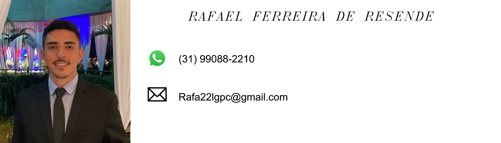

Rafael Ferreira de Resende
Contato
Endereço: Ouro Branco, MG
Telefone: (31) 99088-2210
E-mail: rafa22lgpc@gmail.com
LinkedIn: https://www.linkedin.com/in/rafael-ferreira-de-resende-403a0b22b/
Objetivo
Estudante de Engenharia de Telecomunicações em Busca de Oportunidades de Aprendizado e Desenvolvimento.
Universidade Federal de São João del-Rei (UFSJ) - Início: 2023, Previsão de Conclusão: 2028
Educação
Ensino Médio Completo
Escola Colégio Sant'Ana - Conclusão: 2022
Habilidades Técnicas
- Conhecimentos sólidos em Telecomunicações e Tecnologia da Informação
- Experiência com linguagens de programação, incluindo Python, JavaScript, HTML, TypeScript e C++
- Familiaridade com sistemas operacionais, especialmente Windows
- Domínio de pacote Office (Word, Excel, PowerPoint)
- Habilidades em resolução de problemas e trabalho em equipe
Idiomas
- Português: Nativo
- Inglês: Intermediário
Competências
- Python
- JavaScript
- HTML5
- TypeScript
- Trabalho em equipe
